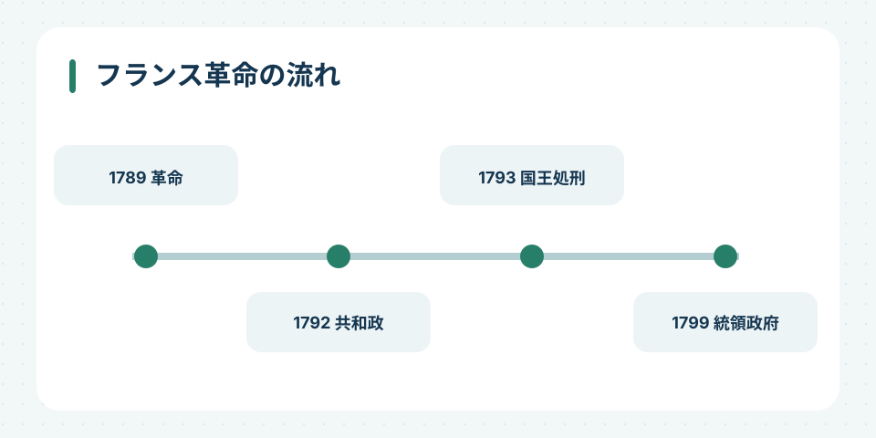

世界史 / UNIVERSITY ENTRANCE EXAM
フランス革命の流れ
フランス革命は、旧制度への不満から始まり、立憲君主制・共和政・恐怖政治・総裁政府へと変化しました。年号を事件の因果関係で結びつけましょう。
史
このページで学べること
1789年からナポレオンまで。要点を読んだら、最後の確認問題で理解度をチェックしましょう。
POINT 01
革命前の社会ときっかけ

旧制度（アンシャン＝レジーム）では、第一身分の聖職者・第二身分の貴族が特権を持ち、第三身分が重い負担を担っていました。財政危機を背景に、ルイ16世は1789年、三部会を招集します。
第三身分の代表らは国民議会を結成し、球戯場の誓いで憲法制定まで解散しないと宣言しました。
POINT 02
頻出の流れを年表で覚える
| 年 | 事件 | 意味 |
|---|---|---|
| 1789 | バスティーユ牢獄襲撃 | 民衆による革命の象徴 |
| 1789 | 封建的特権の廃止・人権宣言 | 旧制度からの転換 |
| 1791 | 憲法制定 | 立憲君主制 |
| 1792 | 王政廃止・共和政成立 | 第一共和政 |
| 1793 | ルイ16世処刑 | 王政からの決別 |
| 1794 | テルミドールのクーデタ | ロベスピエール失脚 |
| 1799 | ブリュメール18日のクーデタ | ナポレオンが統領政府を樹立 |
POINT 03
流れを一本につなぐ
財政危機 → 三部会 → 国民議会 → 民衆蜂起 → 権利の宣言 → 共和政 → 恐怖政治 → ナポレオンという因果で覚えると、並べ替え問題に強くなります。
混同注意：1789年の人権宣言と、1791年の憲法制定は別の出来事です。
PRACTICE
確認問題に挑戦！
全3問。答えを考えてから「解答と解説を見る」を押してね。
Q01
1789年に第三身分の代表らが結成した議会は？
解答と解説を見る ＋
正解・解答例
国民議会
憲法制定を目指し、球戯場の誓いを行いました。
Q02
フランスが王政を廃止し、共和政になった年は？
解答と解説を見る ＋
正解・解答例
1792年
1791年の立憲君主制から転換し、第一共和政が始まりました。
Q03
1794年に失脚した恐怖政治の中心人物は？
解答と解説を見る ＋
正解・解答例
ロベスピエール
テルミドールのクーデタで失脚しました。
今日のまとめ
年号は単体でなく、政治体制がどう変わったかとセットで覚える。
ここまで読めたら、ひと区切り。
理解できたら学習済みにチェックして、次の記事へ。
記事について
StudyMasterの無料学習コンテンツです。AIを補助的に用いて作成しています。例題・解答は公開前にご自身でも確認してください。内容に誤りがある場合は、学校の教科書などと照合してください。
公開・更新：2026年11月12日